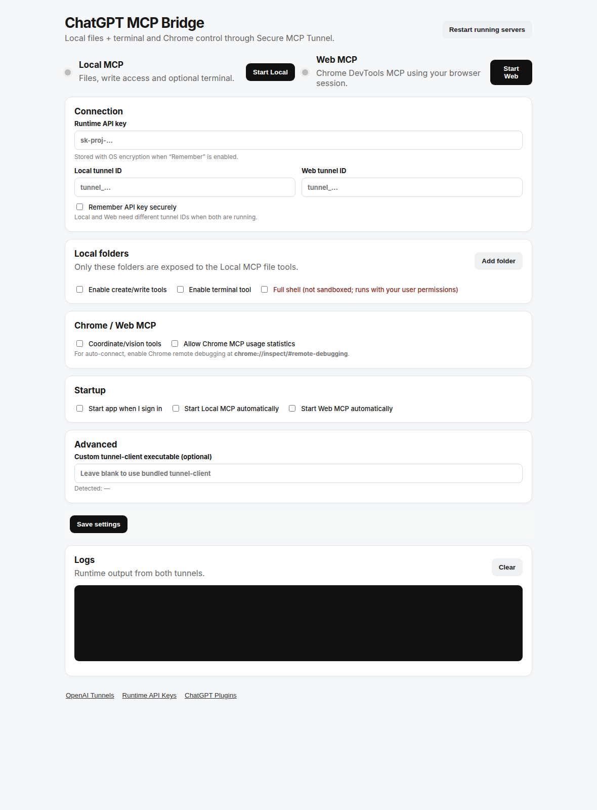

↔
Local MCP through Secure MCP Tunnel
Expose only selected folders to ChatGPT. Choose read-only or read/write access, optionally enable terminal tools, and keep the MCP server private behind an outbound tunnel instead of opening a public endpoint.
ChatGPT MCP Bridge connects ChatGPT to selected local folders, optional terminal tools, and your existing Chrome session through OpenAI Secure MCP Tunnel.

Start only the capabilities you need. Keep file access scoped to approved folders and browser access attached to the Chrome session you already use.
Expose only selected folders to ChatGPT. Choose read-only or read/write access, optionally enable terminal tools, and keep the MCP server private behind an outbound tunnel instead of opening a public endpoint.
Add multiple allowed roots and choose permissions per folder.
Use restricted shell mode or explicitly enable full local-user shell access.
Use Chrome DevTools MCP with current tabs, authenticated sessions, screenshots, network tools and optional coordinate/vision tools.
Start, stop and restart Local MCP and Web MCP independently from the app or system tray.
OpenAI’s Secure MCP Tunnel is designed to connect private or developer-machine MCP servers without exposing them to the public internet. The bridge adds a local permission layer on top of that connection.
Approved roots only. Read-only or read/write folder access. Optional shell. Path traversal and symlink checks around file tools.
Tabs, navigation, clicks, typing, screenshots, console, network inspection, performance tooling and optional experimental vision.
The tunnel client runs on your machine and connects outward to OpenAI. Your local MCP server does not need a public inbound endpoint.
Packaged releases include the app runtime, Local MCP, Chrome DevTools MCP and the OpenAI tunnel client.
curl -fsSL -H "Accept: application/vnd.github.raw+json" \ "https://api.github.com/repos/haseebgb92/ChatGPT-MCp/contents/install-linux.sh?ref=main" | bash
Download or run the Windows installer workflow from the repository. The packaged build includes the required MCP runtimes.
Latest releaseNo. The bridge uses OpenAI Secure MCP Tunnel, which is designed for private or developer-machine MCP servers without requiring a public inbound endpoint.
Not by default. Local MCP exposes only the folders you explicitly add. Each folder can be configured for read-only or read/write access.
Yes. Web MCP uses Chrome DevTools MCP with auto-connect so it can work with your existing browser session when remote debugging is enabled.
Yes, if you enable the terminal tool. Restricted shell adds guardrails; full shell should be treated as local-user-equivalent execution.
Yes. The project targets both Linux and Windows and includes platform-specific installation flows.
Local files, optional terminal access and your existing Chrome session — controlled from one cross-platform desktop bridge.